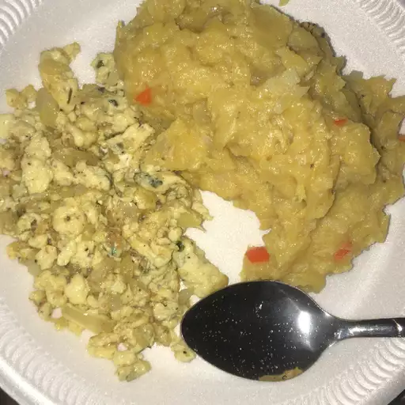

Mangu

Description
This picture has the worst most bland plantain ever not gonna lie
Creamy, rich and delicious, mangu is one of my favorite plantain recipes. Dominica mashed plantain is super simple to make, but is full of flavor. Serve as part of a breakfast, or as a side dish.
Ingredients
- 3 green plantains
- 1 quart water
- 1/4 cup olive oil
- 1 cup sliced white onion
- 1 1/2 tablespoons salt
- 1 cup sliced Anaheim peppers
Directions
- Place the plantains and water in a saucepan. Bring to a boil, and cook 20 minutes, until plantains are tender but slightly firm. Drain, reserving 1 cup of the liquid. Cool plantains, and peel.
- Heat the olive oil in a skillet over medium heat, and saute the onion until tender.
- In a bowl, mash the plantains with the reserved liquid and salt. Transfer to a food processor, mix in the peppers, and puree. Serve the pureed plantain mixture topped with the onions.